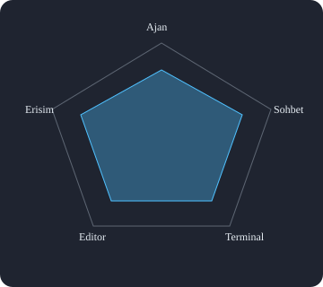

Modul 2
Smarter Sessions ve Chat Deneyimi
Bu bolumde oturum hafizasi, baglam sikilastirma, oturum catallama, yeniden tasarlanan model secici ve sohbet arayuzu gelismelerini ogrenirsin.
Modul 2
Bu bolumde oturum hafizasi, baglam sikilastirma, oturum catallama, yeniden tasarlanan model secici ve sohbet arayuzu gelismelerini ogrenirsin.
/compact kullanilir.

Uzun sohbetlerde baglam alanini temizlemek icin iki yol:
Otomatik
Manuel
/compact — sadece sikilastir./compact [talimat] — konuya odaklanarak sikilastir./compact veritabani sema ve auth kararlarina odaklan
Ayni konusma gecmisinden bagimsiz bir dal olustur; farkli cozum yollarini dene.
Sohbet girisine /fork yaz ve Enter'a bas.
Herhangi bir sohbet mesajinin uzerine gelin, Fork Conversation secin.
Catal alinan oturum tamamen bagimsizdir; ana oturumu etkilemez.
/fork ile yeni bir dal ac.
Ajan dusunurken gosterilen yukleme metnini kisisellestirebilirsin.
"chat.agent.thinking.phrases": {
"mode": "replace",
"phrases": [
"Kod satırlari taranıyor...",
"Baglam analiz ediliyor...",
"Optimal cozum hesaplaniyor...",
"Degiskenler dogrulanıyor..."
]
}
inlineChat.affordance: editor veya gutter konumlarinda hizli erisim menüsü.
| Ayar | Aciklama | Deger |
|---|---|---|
chat.notifyWindowOnResponseReceived | Yanit bildirimi | always |
chat.notifyWindowOnConfirmation | Onay bildirimi | always |
chat.tools.terminal.simpleCollapsible | Daraltilabilir terminal | true |
inlineChat.affordance | Satir ici chat konumu | gutter |
Asagidaki senaryoyu adim adim dene:
Yeni bir sohbet ac ve bir proje icin plan olusturmasini iste.
/compact kullan
Bir sure sonra /compact auth modulu kararlarina odaklan yaz.
/fork
Alternatif bir yaklasim denemek icin /fork ile yeni oturum ac.